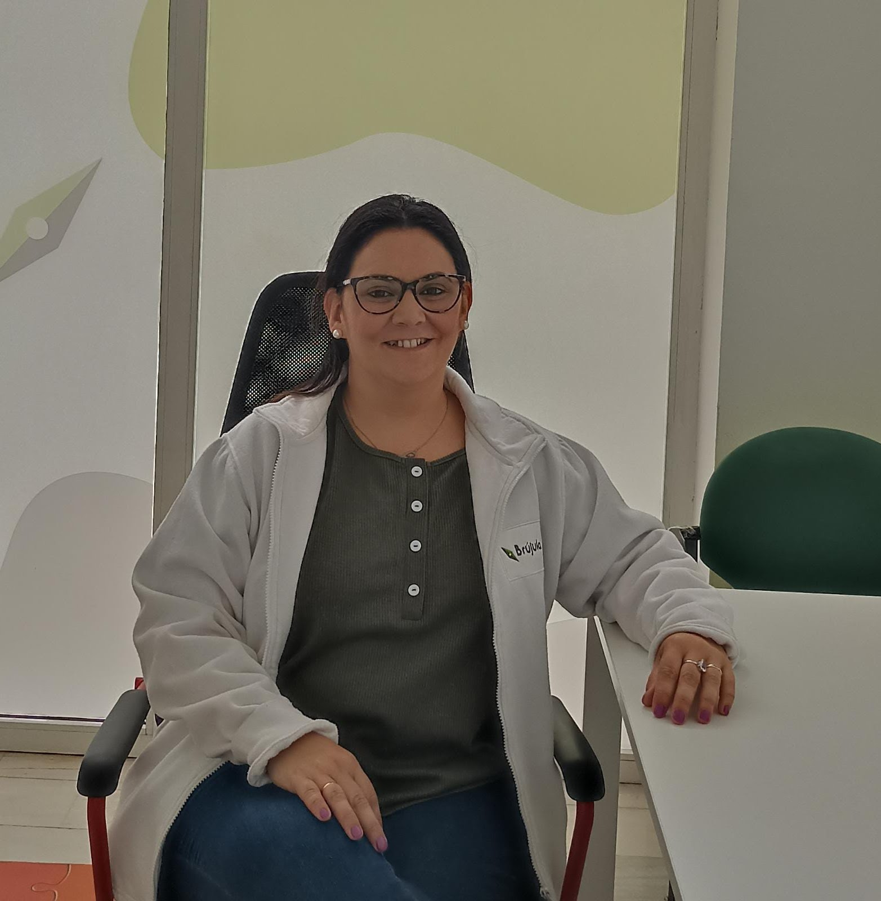

NUESTRO EQUIPO DE PROFESIONALES TRABAJA EN COORDINACIÓN CON LA FAMILIA, PROFESORADO Y EQUIPOS DE ORIENTACIÓN EDUCATIVA

AUDICIÓN Y LENGUAJE
Dislexia, dislalia, trastorno específico del lenguaje, tartamudez, déficit de atención, memoria, trastorno general del desarrollo, hiperactividad

PSICOLOGÍA
Menores, adolescentes, adultos y familias. T. Del comportamiento, estado anímico, ansiedad, bullying, terapias individuales y grupales. Psicóloga sanitaria y forense. Informes